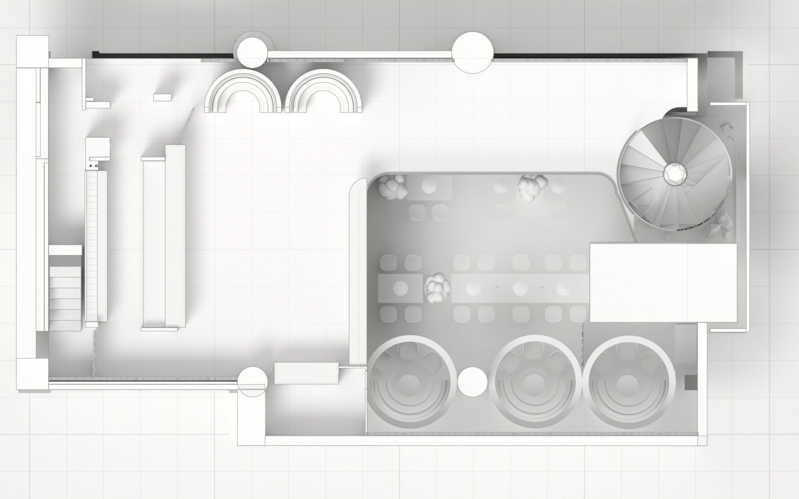
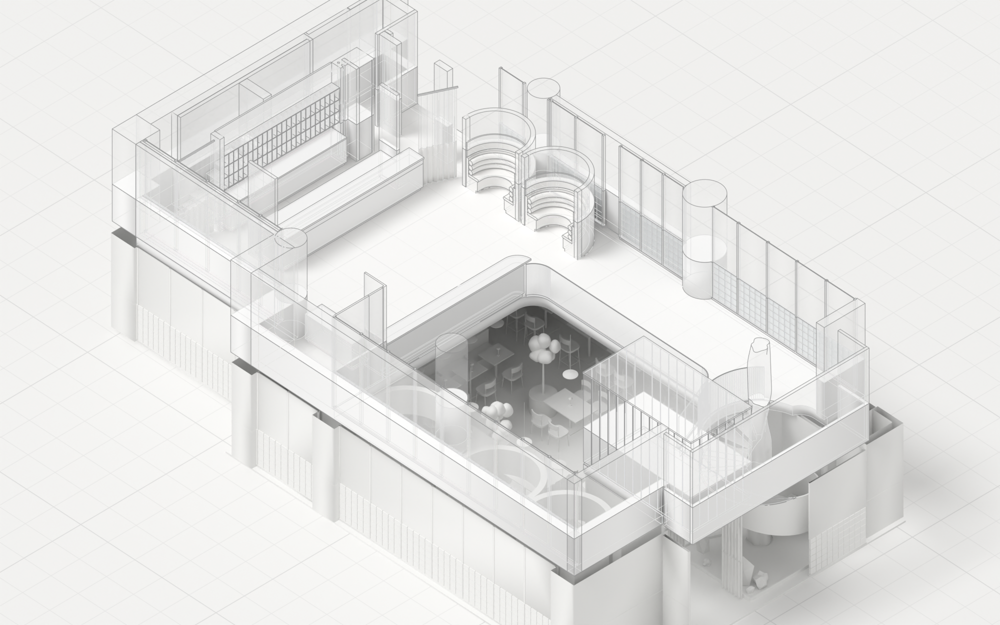
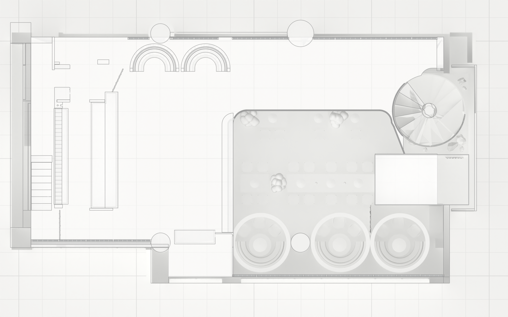
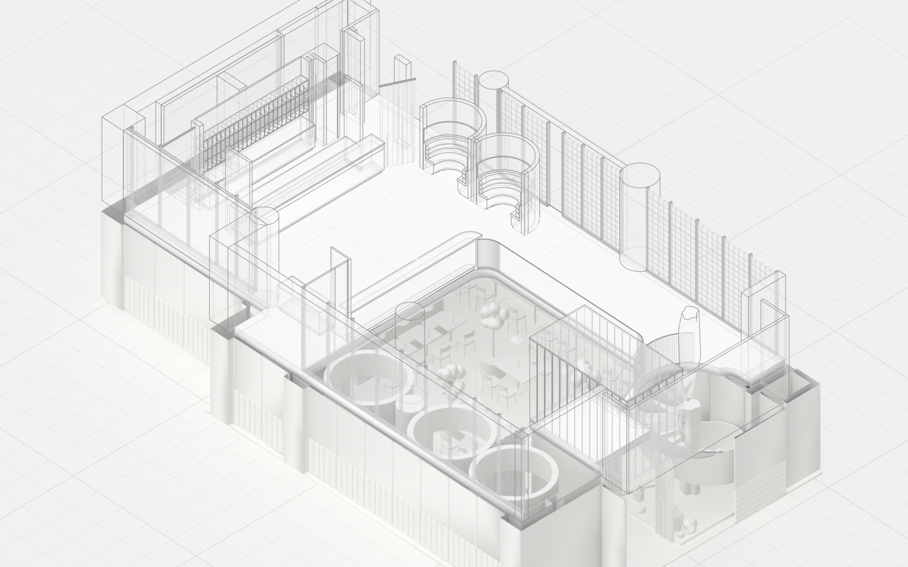
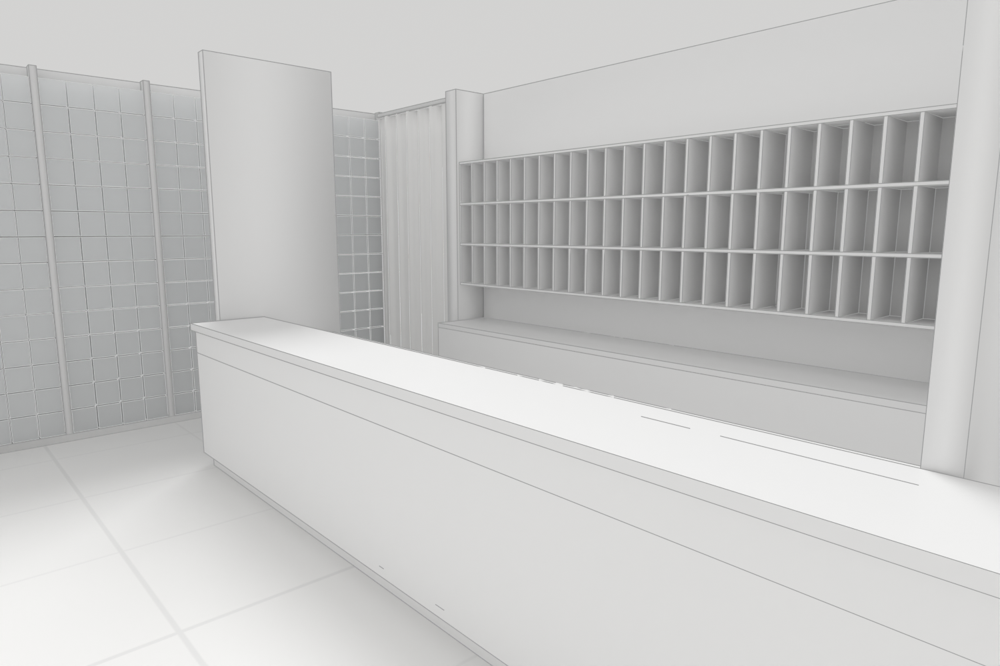
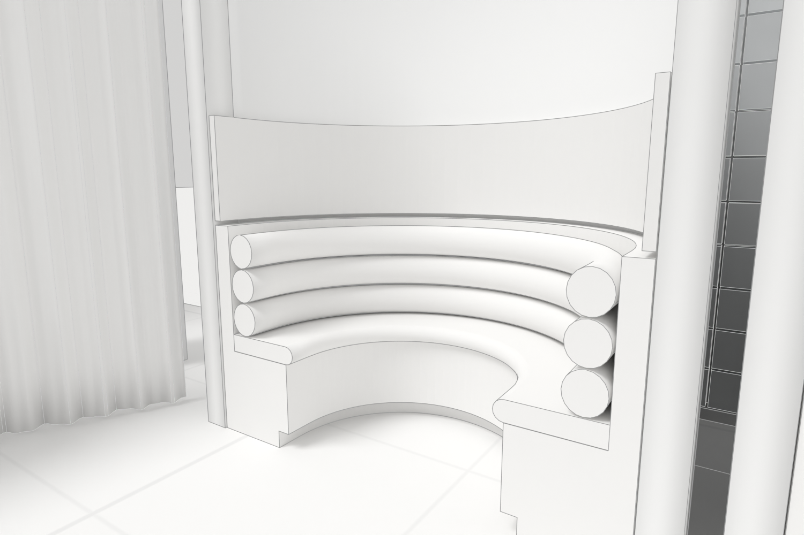
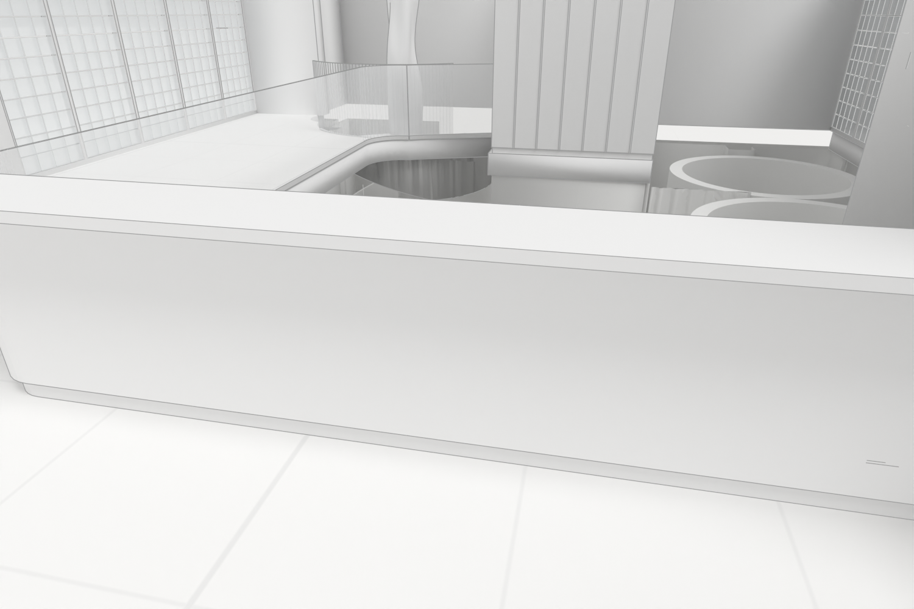
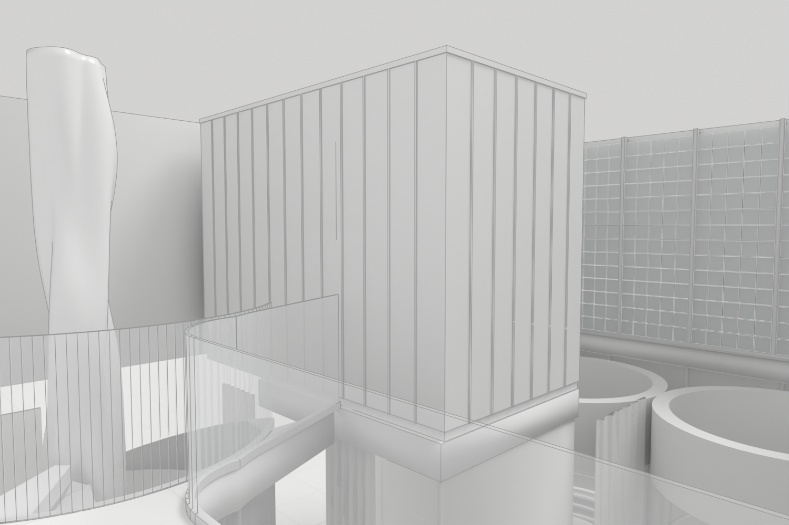
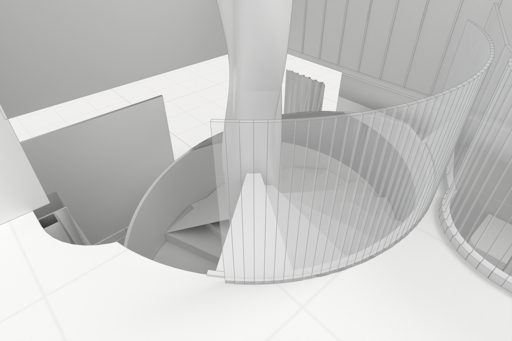

Restaurant · 1er étage · étape 2 : les éléments fixes, d'après les photos
25/11/2026 · comme l'étape 3 du rez-de-chaussée : le fantôme par défaut, le fil de fer au choix
La coque de la mezzanine est validée. Voici ses éléments fixes, modélisés comme ceux du
rez-de-chaussée, avec les mêmes matériaux, les mêmes styles et les mêmes caméras que la carte : le bar omakase, les
banquettes des deux demi-tambours, la tablette au bord du vide, le comptoir du laboratoire, les rideaux, le volume
au-dessus de l'entrée, le haut de l'escalier et les façades en pavés de verre. Le mobilier viendra ensuite.
Fantôme, le style par défaut
Comme au rez-de-chaussée, les éléments sont coupés à 1,20 m avec les murs : le bas est plein, le haut presque invisible. Sous la mezzanine, le rez-de-chaussée apparaît en gris clair, sans trait. Vu du haut, on ne le voit qu'à travers les vides ; vu en 3D, c'est le bâtiment sur lequel la mezzanine est posée.

Vue du haut

Vue 3D
Fil de fer, au choix dans l'application
Le même modèle, en arêtes seulement. Les pavés de verre ont un trait plus fin et plus clair, comme au rez-de-chaussée. Les ombres sont coupées : c'est un dessin.

Vue du haut

Vue 3D
Le bar omakase

Le modèle, en blanc et à pleine hauteur
Le vrai lieu, photo 12
Il est construit comme le bar du rez-de-chaussée. Côté barmen, un plan de travail en inox à 0,90 m : c'est la bande métallique du plan. Côté clients, un plateau à 1,08 m pour les six tabourets.
Derrière, un meuble bas avec son plan à 0,90 m, et au-dessus une grille de casiers ouverts pour les bouteilles (photos 11 et 12) : 24 travées sur 3 rangs, de 1,25 à 2,35 m. Ce sont les 24 cases du plan. Le fond monte jusqu'au plafond.
Les banquettes des demi-tambours

Le modèle, en blanc et à pleine hauteur
Le vrai lieu, photo 20
Les deux demi-tambours contre la façade ont les mêmes banquettes que les tambours du rez-de-chaussée : le socle en retrait, l'assise à 0,48 m avec un nez arrondi, le dossier en trois boudins jusqu'à 0,95 m, et le bandeau de pierre de lave de 1,00 à 1,46 m. Elles suivent la paroi d'un retour à l'autre.
La tablette au bord du vide

Le modèle, en blanc et à pleine hauteur
Le vrai lieu, photo 26, prise depuis la mezzanine
Le long du vide, la bande du plan est une tablette à 1,08 m, la hauteur des plateaux des bars, pour les six tabourets. Son corps plein est du côté du vide et sert de garde-corps. Le plateau déborde de 0,24 m côté tabourets, pour les genoux. Le bout est arrondi comme sur le plan.
Ailleurs, le bord du vide et l'ouverture de l'escalier ont un garde-corps en verre de 1,05 m.
Le volume au-dessus de l'entrée

Le modèle, en blanc et à pleine hauteur
Le vrai lieu, photo 37, le portail d'entrée côté rue
Aucune photo ne le montre depuis la mezzanine. Le plan le dessine plein, et l'axonométrie de l'architecte montre une boîte fermée au-dessus de l'entrée. C'est le haut du portail d'entrée, qui est en métal noir à joints debout côté rue (photo 37).
Je l'ai donc habillé comme ce portail : des panneaux de 0,30 m à joints debout, un creux d'ombre au pied et une couvertine fine au plafond.
Le haut de l'escalier hélicoïdal

Le modèle, en blanc et à pleine hauteur
Le vrai lieu, photo 28
C'est l'escalier du rez-de-chaussée, sans rien changer : les marches pleines, le garde-corps plein, la sculpture en miroir. Ses dernières marches passent dans l'ouverture de la dalle et arrivent au repère DN du plan. La sculpture continue de se tordre jusqu'au plafond de la mezzanine.
Modélisés aussi, à voir sur la vue du haut
Les façades : des pavés de verre de 20 cm dans des cadres d'acier, comme au rez-de-chaussée, sur toutes
les travées du plan. Au-dessus du vide, la façade double hauteur continue jusqu'au plafond de la mezzanine.
Le laboratoire (zone 2) : un comptoir bas avec son plan de travail à 0,90 m, le long du passage vers la
salle. Il est fermé côté vide par un mur, dans le prolongement de celui du plan.
Les rideaux : ce sont les lignes ondulées du plan. L'un ferme le palier de l'escalier qui monte, l'autre
le passage entre le bar omakase et l'ascenseur. Ils sont faits comme ceux du rez-de-chaussée.
Questions
Les éléments te semblent-ils justes par rapport aux photos ? S'il y a une forme ou une hauteur à reprendre, dis-le-moi avant le mobilier.
Le volume au-dessus de l'entrée, en métal noir à joints debout comme le portail : ça te va ?
Pour le mobilier, je propose ce qui est dessiné sur le plan : les 6 tabourets du bar omakase, la grande table et ses 10 chaises, les 6 tabourets de la tablette, les tables rondes des deux demi-tambours avec leurs 4 fauteuils, les 3 tables le long de la façade avec leurs 7 chaises, et les machines du laboratoire. Toutes les tables seront numérotées pour la carte, à la suite de celles du rez-de-chaussée. Ça te va ?
Le long de la façade de droite, derrière ces 3 tables, le plan dessine une bande continue qui contourne le poteau. Je la lis comme une banquette, sur laquelle s'assoient les clients de ces tables. Au rez-de-chaussée, la bande équivalente est une tablette en bois. Banquette ou tablette ?
Sources
LAIR Restaurant & Bar, Gurugram, par RENESA Architecture Design Interiors Studio (2024). Les
photos sont d'Avesh Gaur, sur ArchDaily. Elles servent seulement de référence pour la modélisation.